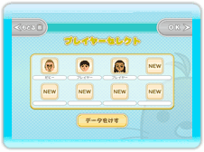
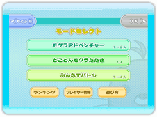
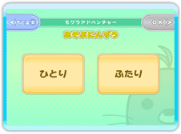
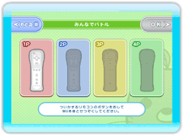

● ゲームを始める
タイトル画面で を押すと、プレイヤーセレクト画面に進みます。初めてこのゲームを遊ぶ場合は、遊び方説明のあとプレイヤーセレクト画面に進みます。
を押すと、プレイヤーセレクト画面に進みます。初めてこのゲームを遊ぶ場合は、遊び方説明のあとプレイヤーセレクト画面に進みます。

● プレイヤーセレクト画面
プレイヤーデータを選び、モードセレクト画面に進んでください。新しくプレイヤーデータを作るときは「NEW」を選び、使うMiiを決めてください。

● モードセレクト画面
遊びたいモードを選びます。
・ モグラアドベンチャー（1人～2人用）
各ステージに登場するバラエティ豊かなモグラたちをやっつけるモードです。2人協力プレイもできます。
・ とことんモグラたたき（1人用）
できるだけモグラを逃がさずに、どれだけ得点が取れるか挑戦する１人用のモードです。モグラをたくさんたたくとレベルが上がり、だんだん難しくなります。
・ みんなでバトル（1人～4人用）
最大4人まで同時に参加できる対戦モードです。決められた数のモグラを早くたたく数ルールと、カラフルなモグラをたたいて色を揃える色ルールがあります。
・ ランキング
本体内のランキングと、全国のプレイヤーのランキングを見ることができます。
・ プレイヤー情報
プレイヤーの成績やゲットした称号を見ることができます。
・ 遊び方
初めて遊ぶときに表示される遊び方説明を見ることができます。
● ゲーム設定画面
モードを選んだら、次にゲーム設定を行いましょう。設定する項目はモードによって変わります。


① 参加人数を選ぶ
人数を選びます。人数分のWiiリモコンを接続して「OK」ボタンを押してください。「みんなでバトル」で参加人数が4人より少ない場合、さらにCPUの人数を選びます。
② Miiを選ぶ
プレイ記録を保存するMiiを選びます。ゲストのMiiでは記録を保存できないので注意してください。
③ ステージやルールの設定
ステージやルールなどを選んでください。設定する項目はモードによって異なります。詳しくは、各モードの説明をご覧ください。
④ 設定内容確認
設定した内容が表示されます。「スタート」ボタンを押すとゲームが始まります。設定し直す場合は、「もどる」ボタンを押して前の画面に戻ってください。